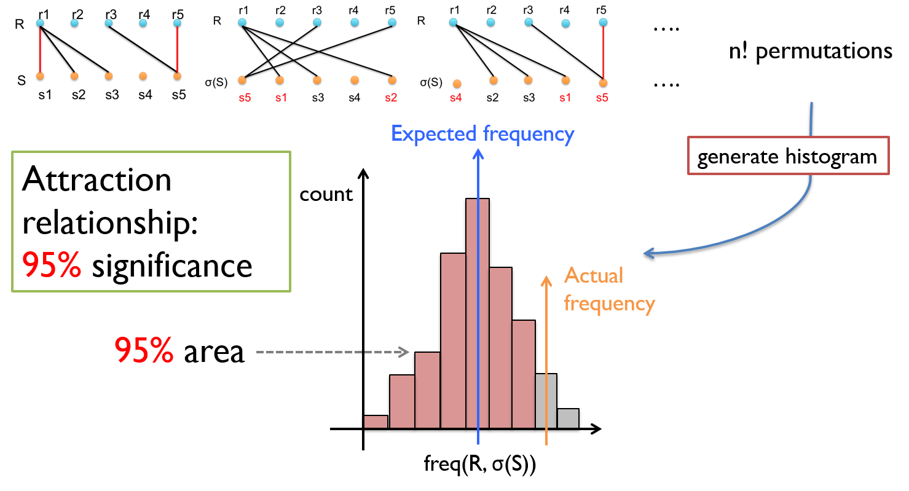
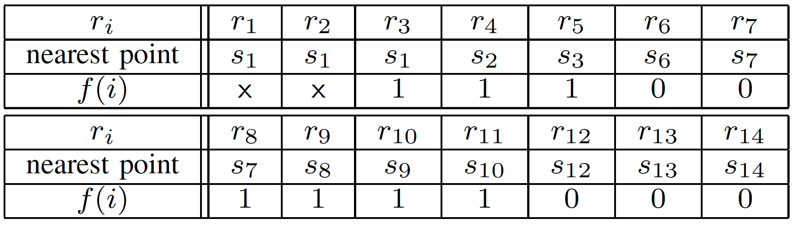

MoveMine 2.0 Manual
Overview
In this package, we include following functions:
- Distance Calculation: This function calculates the pairwise Euclidean distance between selected objects.
- Attraction and Avoidance Mining: This function computes the significance value for attraction and avoidance relationship between two moving objects.
- Following Mining: This function detects all the time intervals that following relationships occur.
- Plot Meeting Places: This function plots trajectories, meeting places, spatially close locations between a pair of moving objects.
Mining Function: Distance Calculation
This function computes the pairwise distance matrix (in meters) for the individuals selected. The distance is pairwise Euclidean point distance normalized by trajectory length. Given two trajectories R= r1r2...rn and S =s1s2...sn, the average distance is computed as:
aveDist(R,S) = 1/n * ∑ i n dist(ri,si), where dist() is Euclidean distance.
Mining Function: Attraction/Avoidance Mining
This function computes the significance value of the interactions (attraction/avoidance) between two individuals. If the value approaches 1, then there is a significant attraction relationship between the two. If the value approaches 0, then there is a significant avoidance relationship between the two.
Parameters
- # Rounds: This parameter specifies the number of permutations computed to estimate significant values. More rounds will be more accurate in the estimation of the significant value but slower in computation.
- Dist thres: This parameter specifies the distance constraint to determine whether two points are spatially close (i.e. a meeting event).
Method
The meeting frequency alone can hardly quantify the strength of the relationship between two objects without considering the background movements. Thus, we propose a probabilistic model to consider the mobility background between two objects. The intuition is that if two movement sequences R and S are independent (any meeting event between them could happen randomly), then the meeting frequency between random permuted R and S should remain similar to the actual meeting frequency. Otherwise, R and S are not independent. To determine whether there is attraction or avoidance as well as the degree, we test the significance of observing the actual meeting frequency under the independent hypothesis. The test statistics is computed using permutation test. Figure 1. Illustration of the method.
Figure 1 illustrates the process of permutation test. In each permutation, we compute the permuted meeting frequency. A permuted meeting frequency histogram can be generated for all possible permutations. Then we use the histogram (background) as the test statistics to compute the significance of observing the actual meeting frequency. More specifically, if 95% of the permuted meeting frequencies are less than the actual meeting frequency, then we say there is a significant attraction relationship of 0.95 between the two (because they meeting much more than expected). Similarly, we can quantify the avoidance relationship as well. In practice, it is impossible to compute the n! permutations. Thus, we only use limited number of permutations to proximate the background distribution.
Reference
For more detail about the method, please refer to the paper:
Zhenhui Li, Bolin Ding, Fei Wu, Tobias Kin Hou Lei, Roland Kays, and Margaret Crofoot, Attraction and Avoidance Detection from Movements , Proc. 2014 Int. Conf. on Very Large Data Bases (VLDB'14/PVLDB), Hangzhou, China, Sept. 2014.
Mining Function: Following Mining
This function mines the time intervals that following relationships occur between two individuals. By default, top-10 intervals will be output. It is recommended to apply this function on dataset that has sampling rate higher than 1 minute.
Parameters
- Time thres: This parameter specifies the time constraint to determine whether two points are temporally close.
- Dist thres: This parameter specifies the distance constraint to determine whether two points are spatially close.
- Min Interval Length: This parameter specifies the minimum interval length for visualization. *This parameter is NOT a parameter of the method but for post-processing.
Method
Supposedly, we have two trajectories R= r1r2...rn and S =s1s2...sn, where R follows S . If ri follows S, ri should be close to some point sj in S both spatially and temporally (determined by the two parameters). We call sj that is the closest point to ri the Local Minimizer to ri . Intuitively, the follower should be close to its leader's previous location with a time lag. Thus, we define an indicator function f(i) on each timestamp i that shows whether the local minimizer sj has a later timestamp then ri. If so, we call such location pair (sj,ri) a following pair. Figure 2 shows a toy example and the indicator function for the example. In the example, R follows S in time [3:11]. Green lines connect points in R to their local minimizers. Accordingly, we can compute the f(i) for R by checking whether sj has a later timestamp then ri (forms a following pair). The corresponding values for the indicator function is shown at right.*Green line indicates local minimizer.
Figure 2. A toy example of following pairs. R (blue) follows S (red) in the time interval [3:11].
A significant following time interval should have more following pairs compared with the expectation. The expectation is computed under the assumption that if R and S are simply staying together or moving together. There is 50% chance for a following pair to occur at one time stamp. Thus, we define the following score for an interval I as g(I) = f(I)-0.5*|I|. For the example, the following score for [3:11] is 7-0.5*9 = 2.5. The problem of finding following time interval is equivalent to the Maximum Sum Segment problem.
Reference
For more detail about the method, please refer to the paper:
Zhenhui Li, Fei Wu, and Margaret Crofoot, Mining Following Relationships in Movement Data , Proc. 2013 IEEE Int. Conf.on Data Mining (ICDM'13), Dallas, TX, Dec. 2013.